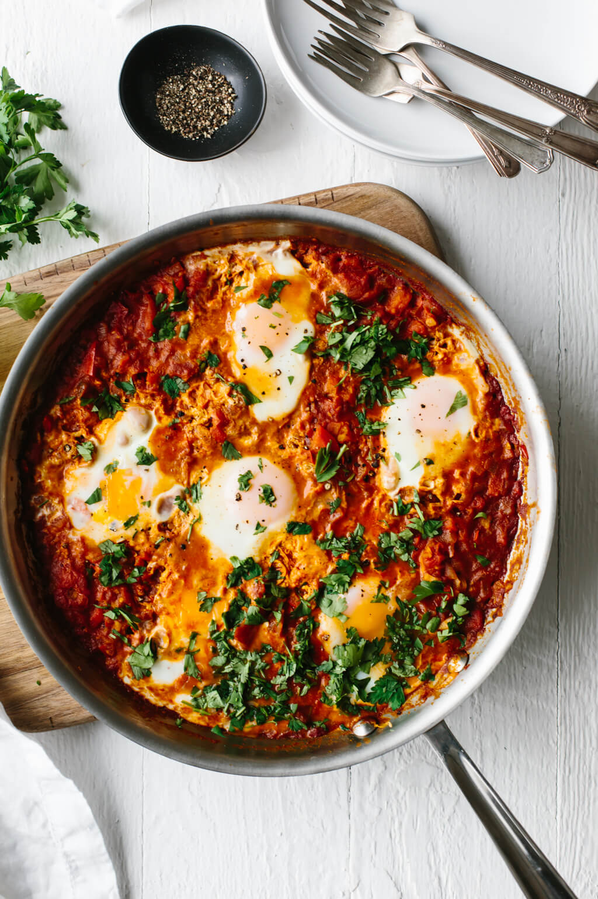
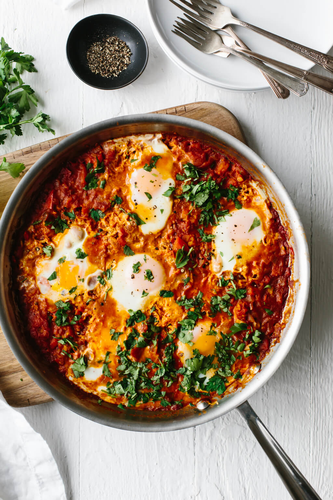

Bread Recipes
The sweet and savory bread recipes I recommend are an orange loaf bread recipe, chocolate chip banana bread, and rosemary garlic focaccia. These recipes are very tasty and do not require many ingredients nor advanced cooking equipment. Leftover banana bread is great to use as a bread for French toast the next day. The focaccia bread pairs well dipped in marinara sauce. Some pictures of the breads baked from these recipes are shown below:
Cake Recipes
Two cake flavors that I found to be very popular among my peers in college is lemon and chocolate flavored cake. As a result, I have attached simple recipes for both: lemon cake and black forest cake. I have baked the black forest cake for one of my relatives birthdays, and its multiple layers were able to serve a lot of people. The cherries mixed with chocolate pair well together, and the fruit offsets the richness of the chocolate well. The lemon cake is more simple to make and still has great flavor. Some photos of the cakes are shown below:
Cookie and Brownie Recipes
Two cookie recipes I recommend are dark chocolate and cranberry biscotti and thumbprint cookies with jam. Both recipes do not require many ingredients and can be customized with other flavors and jam. Biscotti is great to dip into tea or coffee in the morning. A good brownie recipe is peanut butter brownies. These brownie make a great base for an ice cream sandwhich. Pictures of the bakes are shown below:
Breakfast Recipes
The breakfast food recipes provided that are simple and very tasty are basic crepes and shakshuka. For the crepes, all you need is a large pan to slightly tilt when cooking to spread the batter very thin. You can add Nutella, chocolate sauce, fruits, and cinnamon to make the crepes sweet, or lunch meat, cheese, and spinach for a savory crepe. Shakshuka is very tasty and a great way to eat vegetables for breakfast. I personally like to dip toasted bread into shakshuka. Below are some pictures of what the foods look like from the recipe:
 
